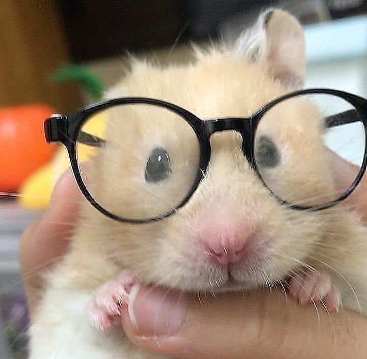

햄쥐란 함스터의 약칭으로 핸스터를 지칭하는 약칭이다.
햄쥐는 동네 마트에서 만나볼수잇다(근데동물학대임 마트에서 사지말기) 또는 운이좋으면 길거리나 산길에서 마주칠수있기도
슬프게도 아마 유기햄쥐일 것이다 그러니 잘 살게 내비두자. 유기햄쥐들이 또 의외로 살림을 잘꾸린다고 한다.
아무튼 햄스너의 특징은 매우 귀엽단것이다. 보통 털이많은데 얼굴은 항상 궁금한 표정을 하고잇다.
밥은 주로 견과류나 야채 채소 과일 등을 먹는다. 건망고같은거 간식으로 주면 좋아한다. 근데 너무많이주면 배탈나니까 적당히주자
햄들의 취미는 쳇바퀴타기인데 이거 진짜 많이 한다고 한다 아무튼 핸스더들은 착한 친구들이다.
